← 게임으로최신 펍 실내 원화 · 니트 차림과 편안한 자세 →
0.8.1 · 퇴근 인사와 익명의 얼굴
첫 사무실의 두 사람은 일반 동료예요. 옷과 손짓은 보이고 얼굴만 그림자로 처리했어요. 작은 사진 인서트는 삭제했어요.
 PC용 퇴근 인사
PC용 퇴근 인사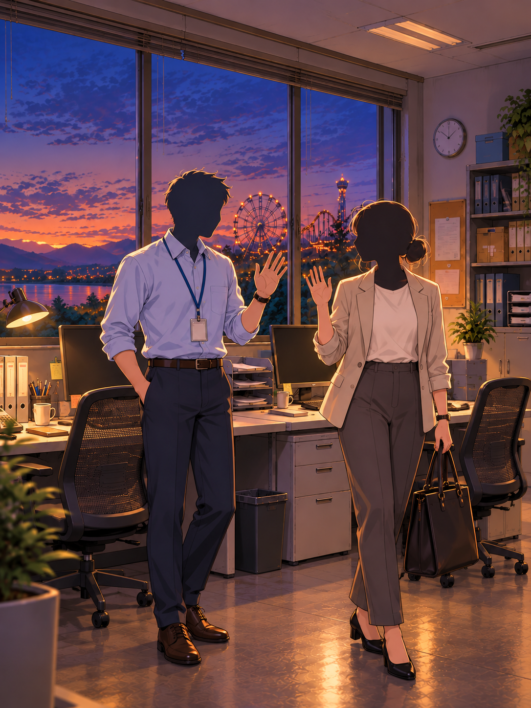
모바일용 동일 장면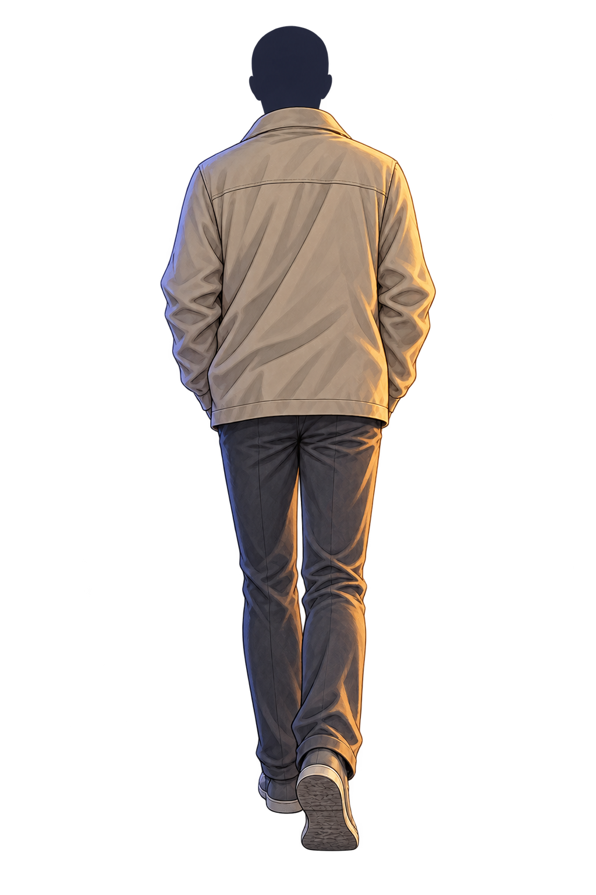
머리만 익명 처리한 주인공. 내장 image_gen으로 편집했으며 요청문은 assets/production-v081.json에 있어요.서안의 같은 얼굴, 아홉 표정
정면 원화 하나를 기준으로 표정만 바꿨어요. 얼굴 위치·몸·옷·조명을 맞췄으며, 본편에서는 장면의 감정이 달라질 때 표정을 전환해요.

기본
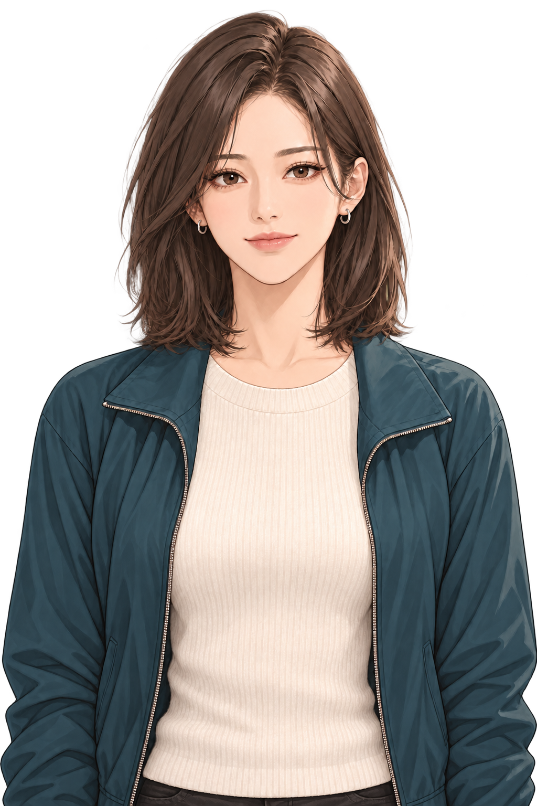
미소
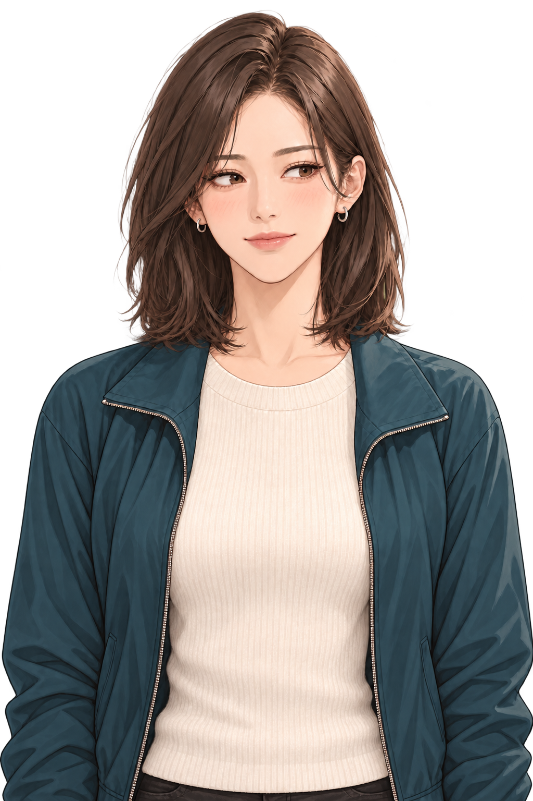
머뭇거림
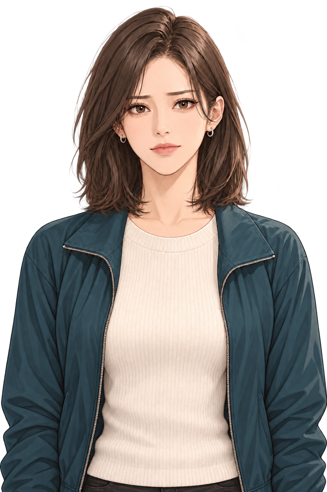
진지함
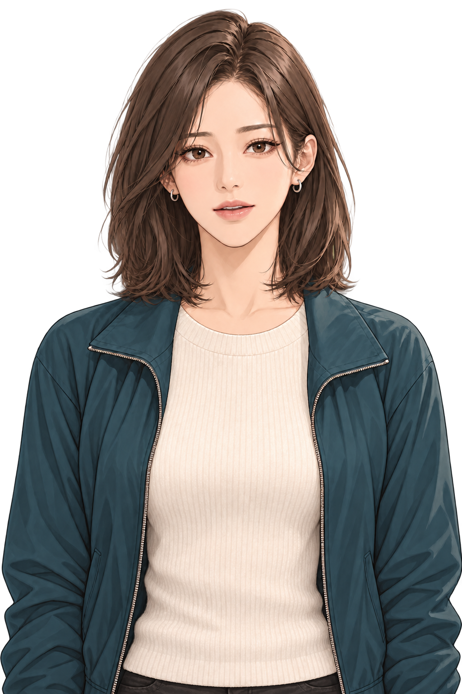
경청
작은 웃음
수줍은 미소
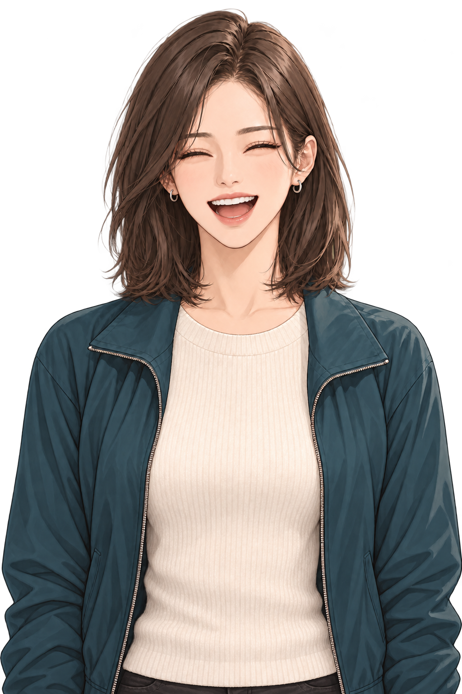
폭소
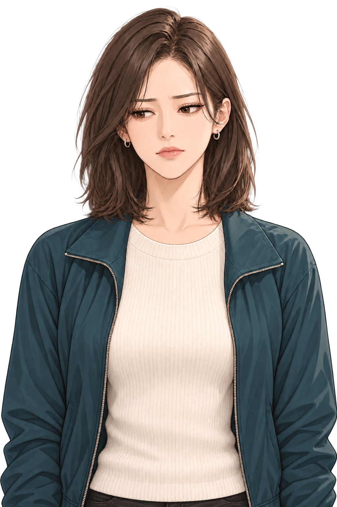
고민
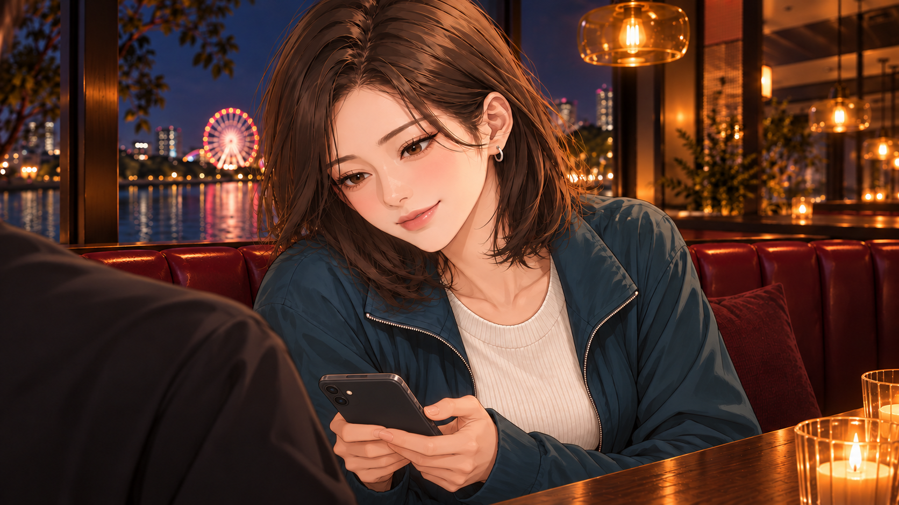
휴대폰 화면은 두 사람 쪽으로, 카메라에는 뒷면이 보이도록 수정했어요. 주인공은 어깨 실루엣이에요.기존 조연 원화는 유지했어요. 신규 원화는 image_gen으로 제작했고, 생성·참조 기록은 assets/production-v06.json에 있어요.
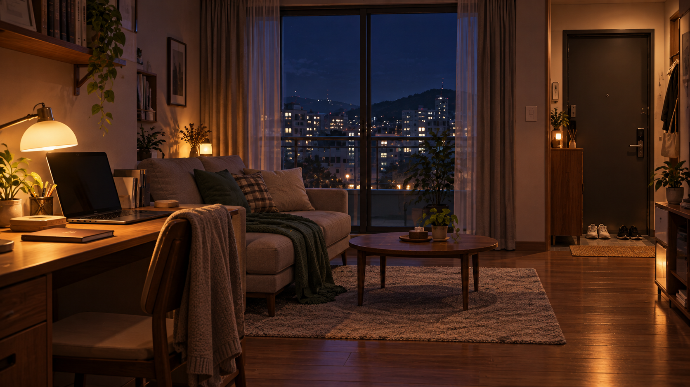
귀가 후 메시지는 집에서 읽어요.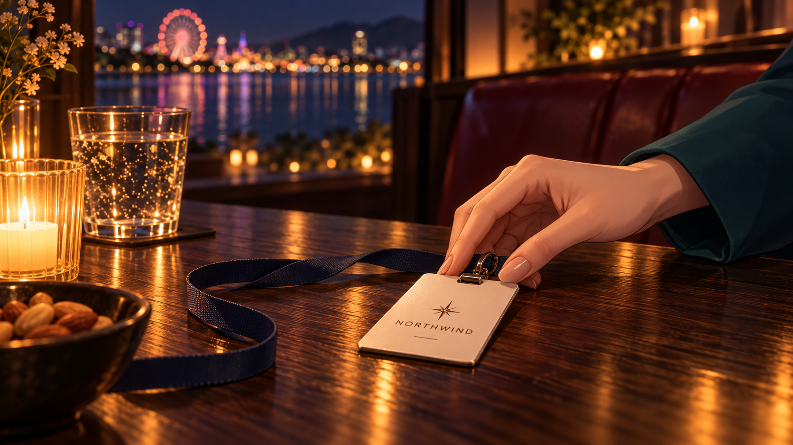
출입증을 내려놓는 순간컵을 굴리다 멈춘 손